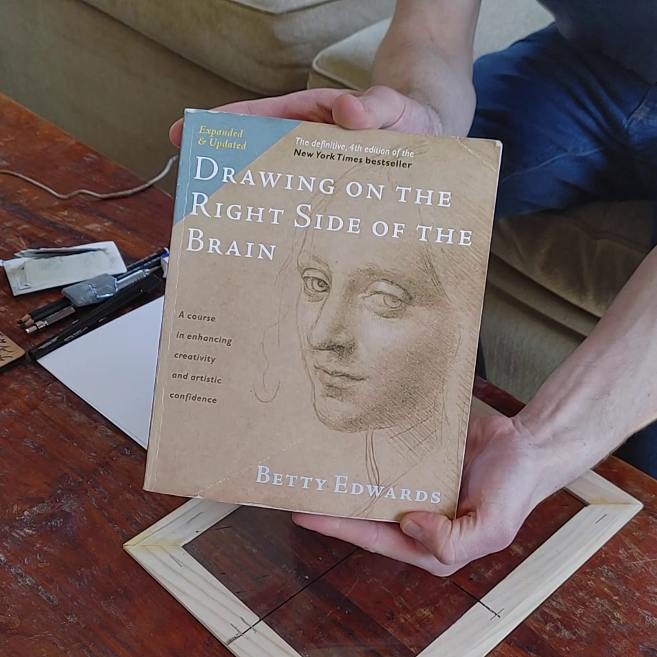
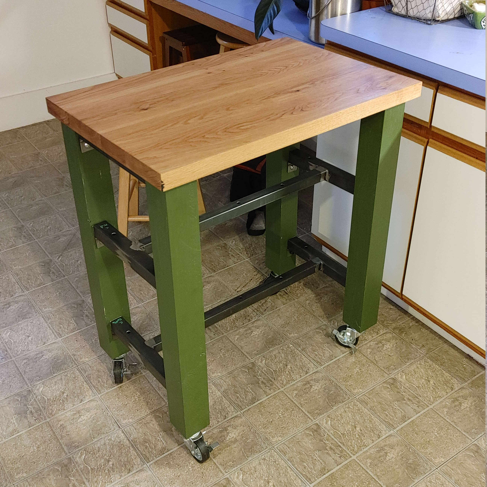

Tips for Drawing on the Right Side of the Brain
This post gives some context for the tools needed for the book "Drawing on the Right Side of the Brain" by Betty Edwards
read more

Woodworking Projects
This post is a running list of some of my recent woodworking projects. These are certainly not the prettiest, but I think Im getting better with each one.
read more

Building an Evil Red Button
Finally you too can have your own evil red button for the next time some hero comes by your lair unannounced
read more


Turn on your PC over WiFi
This project shows how you can both power on your PC and log into it remotely using a Raspberry Pi Pico W and MQTT
read more

Basic subwoofer build
Building a subwoofer is an simple introduction project to woodworking and electrical work. Doesn't change how bad of job I did
read more